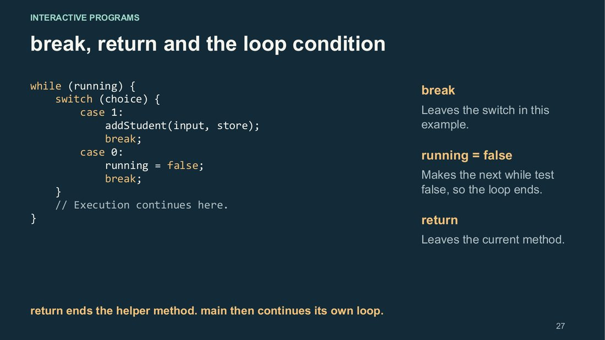
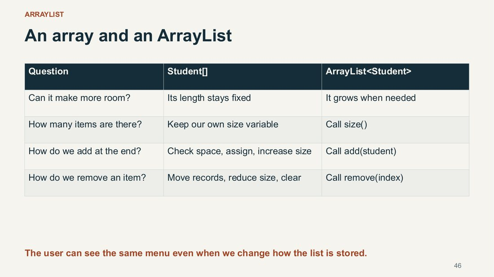

SOE102 · 第 9 章
交互式程序与 ArrayList
Interactive Programs & ArrayList
虚线下划线为术语；悬停查看中文、英文与释义，完整词典见“术语”。
本章目录
本讲把“用户按一下、程序做一件事”的交互程序拆成三层：Student 保存一条记录，StudentStore 管理一组记录，InteractiveProgram 负责菜单与输入校验；最后用 ArrayList 换掉定长数组，让列表自己长大。
本章要点
- 交互式程序在运行期间等待输入并作出响应，一个动作做完必须能回到菜单。
- R1–R4 定义保存、查找、删除、纠错四条需求；合法输入是 name 有文本、Year 1–4、gender M/F、age 1–120。
- Student 保存四个已校验的值，StudentStore 是唯一改动数据的地方，InteractiveProgram 只和用户说话。
- 菜单由 while (running) 驱动：break 只离开 switch，只有 running = false 才结束循环。
- 一个 Scanner 贯穿全程，统一 nextLine() 再 parseInt；解析与范围校验是两道独立关卡。
- 定长数组要自己维护 size：0 到 size−1 是已用部分，之后是 null 空位，遍历必须用 i < size。
- 删除要搬移后续记录、size 减一、清空旧的最后一格；只置 null 会留下空洞。
- ArrayList 自动扩容，add/get/set/remove/size 取代手写搬移；get、set、remove 的下标必须小于 size。
9.1 交互式程序：等一次输入，做一个动作
讲义把程序分成两类：一类跑完就退出，另一类在运行期间停下来等用户。后者叫交互式程序interactive program，定义只有一句：An interactive program waits for input and responds while it runs。ATM 上选 Check balance，屏幕显示余额并给出下一个动作；自助结账机上移除一件已扫描的商品，购物篮与总价一起更新；学生管理系统里添加一名学生，程序保存细节并给出确认。三个例子的结构完全相同：一个用户动作、一个程序响应、然后回到“还能继续”的状态。
讲义在 Part 1 的扉页把设计目标写成一句英文：one user action at a time, with a clear way back to the menu。这句话解释了后面的几乎所有代码——菜单为什么要循环、每个任务为什么写成一个方法、错误输入为什么必须重新提问而不是直接退出。
W11 p.2、13–14
9.2 四条需求与五个可检查的任务
写代码之前，讲义先把需求钉死。四条需求描述“这个系统必须做到什么”，每一条都带一个能当场验证的场景：
| 编号 | 要求 | 讲义给的验收场景 |
|---|---|---|
| R1 | 保存一条完整的学生记录 | Lucy, Year 1, F, age 20 只有在每个字段都合法之后才被保存 |
| R2 | 查找并显示已保存的记录 | 找到第一个同名精确匹配，或带下标列出全部记录 |
| R3 | 删除选中的记录 | 按下标删除 Ben，其余记录保持原来的顺序 |
| R4 | 改正错误并继续工作 | 非法输入后重新提问；记录不变，菜单再次出现 |
R4 下面那行小字是全部校验的依据：Valid input: name has text, Year 1–4, gender M/F, age 1–120。它同时说明了四件事——名字不能是空串，年份只能是 1 到 4，性别只有 M 与 F，年龄落在 1 到 120。后面 readInt 的每个 min、max 参数都来自这里。
需求再拆成开发任务。讲义给 task 的定义是“一件工作，加上一个能检查的结果”：不是“写一个方法”，而是“输错时问题会重问”“Lucy 被保存后 size 变成 1”。
| 任务 | 做什么 | 完成标志 | Java 代码 |
|---|---|---|---|
| T1 | 读取并校验每个字段 | 输错就重问同一个问题 | readInt(in, ..., 1, 120) |
| T2 | 创建并保存一条 Student | Lucy 被保存，size 变成 1 | new Student(...)、store.add(student) |
| T3 | 按名字搜索、列出记录 | Lucy 或完整清单出现 | findByName(name)、listStudents(store) |
| T4 | 检查下标并删除 | 选中的记录消失 | store.removeAt(index) |
| T5 | 执行一个任务后回到菜单 | 只有 choice 0 结束循环 | switch (choice)、while (running) |
W11 p.15–18
9.3 三个类各管一件事
讲义先做一次翻译：学生信息表里一行是一名学生，一列是学生的一项信息；到了 Java 里，一行变成一个 Student 对象，整张表交给 StudentStore 保管。于是程序被切成三个类，职责互不重叠：
| 任务 | 类 | 在程序里的工作 |
|---|---|---|
| T2：表示一条记录 | Student | 保存四个已经校验过的值 |
| T2–T4：管理记录 | StudentStore | 增加、查找、读取、删除 |
| T1、T5：处理交互 | InteractiveProgram | 校验输入、运行菜单 |
Student 只做一件事：把四个值捆在一起。字段全是 private final，构造器一次写入；getName() 供查找时比较文本；toString() 决定一条记录打印出来是什么样子。
public class Student {
private final String name;
private final int year;
private final String gender;
private final int age;
public Student(String name, int year, String gender, int age) {
this.name = name;
this.year = year;
this.gender = gender;
this.age = age;
}
public String getName() { return name; }
@Override
public String toString() {
return name + ", Year " + year + ", " + gender + ", " + age;
}
}因为重写了 toString，打印一个 Student 就直接得到 Lucy, Year 1, F, 20。演示里那行 0: Lucy, Year 1, F, 20 前面的 0 是 listStudents 加的下标，不是 toString 的一部分——读输出时要分清哪部分来自对象、哪部分来自列表。
StudentStore 是唯一改动数据的地方：add、findByName、removeAt、size、get。InteractiveProgram 只和用户说话：读输入、校验、调用 store、打印结果。这样分工之后，出错时定位很快——输入有问题改交互层，记录不对改 store。
W11 p.16、20–21
9.4 菜单循环：一个 running 变量控制整台程序
菜单的骨架是一个布尔状态加一个 while：状态记住“程序还要不要继续”，循环每轮做三件事——打印菜单、读一个选项、把选项分派给对应的方法。
Scanner input = new Scanner(System.in);
StudentStore store = new StudentStore(10);
boolean running = true;
while (running) {
printMenu();
int choice = readInt(input, "Choice (0-4): ", 0, 4);
switch (choice) {
case 1: addStudent(input, store); break;
case 2: removeStudent(input, store); break;
case 3: searchStudent(input, store); break;
case 4: listStudents(store); break;
case 0: running = false; break;
}
}
System.out.println("Goodbye.");
input.close();逐句读：Scanner 只建一次；StudentStore 建在循环之外；running 初值为 true；每轮先 printMenu() 再读 0 到 4 的选项；switch 把选项分派给四个 helper；case 0 把 running 置 false。一个选项只跑一个任务，跑完回到 while 的条件判断，菜单再次出现。
为什么 case 0 不能只写 break？因为 break 只离开 switch，执行点立刻回到 while 的条件判断，而 running 仍是 true，菜单会马上再出现。讲义把这做成了 exit check 的第一问：Why does break in case 0 need running = false?
| 写法 | 作用范围 | 在本程序里的效果 |
|---|---|---|
break | 当前 switch（或循环） | 一个 case 执行完，回到 while 判断 |
return | 当前方法 | helper 结束，main 继续自己的循环 |
running = false | 循环条件 | 下一次 while 测试为 false，程序收尾 |
还有一条容易被忽略：store 必须在循环之前创建。讲义在 p.24 的注里写得很直接：Create the store before the menu loop so it keeps the records between tasks。如果把 new StudentStore() 放进 case 1，每次添加都会得到一只空列表，R1 永远无法累积。

W11 p.19、24–27
9.5 一个 Scanner 与 readInt：解析和校验是两件事
讲义规定输入只有一个入口：main 建一个 Scanner，作为参数传给每个 helper，循环结束后关闭。这样不会出现“几个方法各自 new Scanner(System.in)、抢同一股输入”的问题——p.58 的代码评审把这条列为四个待修问题之一。
读取方式统一为 nextLine() 再 parseInt：先读整行，再把文本转成数字。讲义在附录里解释了原因：nextInt() 只取走数字，行尾的回车还留在缓冲区，紧接着的 nextLine() 会读到空串。全部用 nextLine() 就不存在这个残留。
static int readInt(Scanner in, String prompt,
int min, int max) {
while (true) {
System.out.print(prompt);
try {
int value = Integer.parseInt(in.nextLine());
if (value >= min && value <= max) {
return value;
}
System.out.println("Out of range: " + min + " to " + max);
} catch (NumberFormatException e) {
System.out.println("Enter a whole number.");
}
}
}这个方法把两件事分开做：parse 负责“文本能不能变成整数”，range 负责“这个数允不允许”。parseInt 抛 NumberFormatException 就走 catch，提示重输；解析成功但超出范围就打印 Out of range；两个检查都通过才 return。因此它“只在用户输入了合法值之后才返回”，调用方拿到的必然是可用的数字。
| 输入 | 能解析成 int 吗 | 值合法吗 |
|---|---|---|
"20" | 能，值是 20 | 合法，年龄在 1–120 |
"-2" | 能，值是 −2 | 不合法，低于 1 |
"abc" | 不能，NumberFormatException | 重新输入一个整数 |
"999999999999" | 不能，超出 int 的范围 | 重新输入一个整数 |
""（只按回车） | 不能，这一行没有字符 | 重新输入一个整数 |
关键后果在 p.31–32：年龄输错时，Lucy 的记录根本没有被创建，列表仍是 size 0；只有四个值全部通过校验、执行到 store.add 那一行，列表才变成 [Lucy], size 1。也就是说“输入错误不会污染数据”，因为对象是在校验之后才 new 的——这正是讲义用整页表强调的“记录何时被保存”。
文本与性别由附录的两个小 helper 负责：readText 循环到非空为止（text.isEmpty() 为 false 才返回），readGender 用 equalsIgnoreCase 接受 m/M/f/F，否则提示 Enter M or F。
讲义还给了输入结束的处理：readLine helper 在 !in.hasNextLine() 时抛 NoSuchElementException("Input ended")，外层 catch 打印 Input ended. Goodbye. 并在 finally 里 close。这样输入流被关掉（例如重定向的文件读完）时程序能优雅收场，而不是崩在 nextLine 上。
W11 p.28–32、55–57
9.6 数组的已用部分：add、findByName、listStudents
定长数组的 StudentStore 有一条看不见的分界线：size 之前的格子是“已用”，之后是“空位”。讲义用一张快照说明：length 是 5，前三个格子放 Lucy、Ben、Chen，后两个是 null；size = 3，students.length = 5。null 的含义是“这一格没有对象”，不是“有一个叫 null 的学生”。
所以所有遍历都必须写 i < size，不能写 i < students.length。findByName 就是标准写法：
public Student findByName(String name) {
for (int i = 0; i < size; i++) {
if (students[i].getName().equals(name)) {
return students[i];
}
}
return null;
}equals 比较文本，找到第一个精确匹配就 return；循环走完没有匹配则 return null，由 UI 决定是否打印 No student found.。讲义特别注明 "Lucy" 与 "ana" 是两条不同的记录——findByName 只做精确匹配，不做模糊匹配。
listStudents 打印时带上下标，用户才有办法挑一条删除：
static void listStudents(StudentStore store) {
if (store.size() == 0) {
System.out.println("No students yet.");
return;
}
for (int i = 0; i < store.size(); i++) {
System.out.println(i + ": " + store.get(i));
}
}空列表要先拦：size 为 0 时打印 No students yet. 并 return，否则用户看到的是一片空白，不知道为什么没有行。
Add 的顺序不能颠倒：先查 isFull()，再读四个字段，最后才 new Student 并 store.add。讲义在 T1/T2 的任务计划里把这条写成四步，第一步就是 Check space for T2——数组满时直接提示 Storage is full. 并返回，避免写越界。
static void addStudent(Scanner in, StudentStore store) {
if (store.isFull()) {
System.out.println("Storage is full.");
return;
}
String name = readText(in, "Name: ");
int year = readInt(in, "Year (1-4): ", 1, 4);
String gender = readGender(in);
int age = readInt(in, "Age (1-120): ", 1, 120);
Student student = new Student(name, year, gender, age);
if (store.add(student)) {
System.out.println("Student added.");
}
}| 方法 | 返回什么 | 改变什么 |
|---|---|---|
boolean add(Student s) | 加入返回 true，满了返回 false | 在末尾加一条记录 |
Student findByName(String name) | 第一个精确匹配，或 null | 不改动 |
boolean removeAt(int index) | 下标有效返回 true | 后面的记录整体左移 |
int size() / Student get(int i) | 记录数 / 一条记录 | 不改动 |
add 返回 false 表示“没加进去（满了）”，所以确认信息 Student added. 要放在 if 里面，不能无条件打印。讲义在 p.24 用一张前后对照表记录了每条动作对列表的影响：搜索与列出只读，Add 与 Remove 才改数据。
W11 p.22–23、33–36
9.7 删除一条记录：搬移、收缩、清尾
删除是数组版本里唯一需要搬数据的操作。讲义用 Lucy、Ben、Chen 演示删掉下标 1 的 Ben：
| 状态 | 0 | 1 | 2 | 3 | size |
|---|---|---|---|---|---|
| 删除前 | Lucy | Ben | Chen | null | 3 |
| 左移之后 | Lucy | Chen | Chen | null | 3 |
| 清空旧末位 | Lucy | Chen | null | null | 2 |
三步缺一不可：把后面的记录逐个左移（students[i] = students[i + 1]），size 减一，再把原来的最后一格置 null。如果只写 students[index] = null，中间会留下一个洞，size 也没变，随后 listStudents 仍会打印这个洞——讲义在代码评审里把它列为四个问题之一。
public boolean removeAt(int index) {
if (index < 0 || index >= size) {
return false;
}
for (int i = index; i < size - 1; i++) {
students[i] = students[i + 1];
}
size--;
students[size] = null;
return true;
}循环的边界是 i < size - 1：最后一次读的是 students[size - 1]，正好是最后一条记录；写成 i < size 会在 i 等于 size−1 时读 students[size]，越界。清尾那一行也依赖 size 已经减一——此时 students[size] 正指向那个被搬空的旧末位。
交互层的 removeStudent 负责“让用户选对下标”：空列表先提示并返回；先 listStudents 打印带下标的清单；再用 readInt 读 −1 到 size−1（−1 表示取消）；最后调用 removeAt 并确认。
static void removeStudent(Scanner in, StudentStore store) {
if (store.size() == 0) {
System.out.println("No students to remove.");
return;
}
listStudents(store);
int index = readInt(in, "Index (-1 cancels): ",
-1, store.size() - 1);
if (index == -1) {
System.out.println("Cancelled.");
return;
}
if (store.removeAt(index)) {
System.out.println("Student removed.");
}
}把 −1 放进 readInt 的合法区间，是让“取消”也走同一条校验路径的技巧：不需要额外读字符串判断，用户输错仍然会被重问。R3 要求“其余记录保持顺序”，左移恰好满足——被删项之后的所有记录整体前移一格，相对次序不变。
W11 p.37–38、41
9.8 ArrayList 取代数组：长度会自己长
数组版的上限是硬的：十个格子存满十名学生后，第十一个就没有位置。讲义列出两条出路——造一个更大的数组并把记录复制过去，或者报告 full。ArrayList 把第一件事做掉了，所以菜单不用改。
讲义用四个问题对比两种存储：
| 问题 | Student[] | ArrayList<Student> |
|---|---|---|
| 还能再加位置吗 | 长度固定 | 需要时自动变大 |
| 现在有多少条 | 自己维护一个 size 变量 | 调用 size() |
| 怎么在末尾添加 | 查空位、赋值、size 加一 | 调用 add(student) |
| 怎么删除一项 | 搬移记录、减 size、清空末位 | 调用 remove(index) |
创建时注意三件事：泛型写元素类型（ArrayList<Student>、ArrayList<String>）；int 这类基本类型要换成包装类 Integer；new ArrayList<>(10) 只是“预留十个位置”，列表仍然是空的——size() 为 0，isEmpty() 为 true。
ArrayList<Student> students = new ArrayList<>();
ArrayList<String> names = new ArrayList<>();
ArrayList<Integer> ages = new ArrayList<>();
System.out.println(students.size()); // 0
System.out.println(students.isEmpty()); // true常用方法只有五个动作：add 加、get 读、set 换、remove 删、size/isEmpty/clear 查。下标规则要背下来：get、set、remove 要求 0 ≤ index < size；在下标处插入的 add(i, s) 允许 0 ≤ index ≤ size，因为可以追加到末尾。
| 工作 | 方法 | 发生什么 |
|---|---|---|
| 末尾添加 / 指定位置插入 | add(s) / add(i, s) | 加入一项，后面的元素可能后移 |
| 读取一项 | get(i) | 返回该项，列表不变 |
| 替换一项 | set(i, s) | 返回旧项，size 不变 |
| 删除一项 | remove(i) | 返回被删项，后面的元素左移 |
| 计数 / 判空 / 清空 | size()、isEmpty()、clear() | 取数量、判断是否为空、删除全部 |
换实现时，StudentStore 的公开方法一个都不变，只把内部字段换成 ArrayList：
private final ArrayList<Student> students = new ArrayList<>();
public int size() { return students.size(); }
public Student get(int index) { return students.get(index); }
public boolean add(Student student) {
return students.add(student);
}
public boolean removeAt(int index) {
if (index < 0 || index >= students.size()) return false;
students.remove(index);
return true;
}这就是分层的回报：InteractiveProgram 只调 store.add、removeAt、get、size，所以 UI 侧只要把 new StudentStore(10) 改成 new StudentStore()、删掉固定容量的检查，菜单一行都不用重写。讲义的原话是：The user can see the same menu even when we change how the list is stored.

W11 p.45–48、51
9.9 遍历、删除陷阱与代码评审清单
先看一段可以逐步追踪的序列：
ArrayList<String> names = new ArrayList<>();
names.add("Lucy"); // true → [Lucy]
names.add("Ben"); // true → [Lucy, Ben]
names.add(1, "Chen"); // void → [Lucy, Chen, Ben]
names.set(0, "Ava"); // 返回 "Lucy" → [Ava, Chen, Ben]
names.remove(1); // 返回 "Chen" → [Ava, Ben]
names.get(1); // "Ben"两条规律：add(i, s) 是“插入”，原来的 Ben 被挤到后面；remove(i) 返回被删的元素，后面的元素左移。set 返回旧值而不是新值，这一点在追踪题里最容易写反。删完之后只剩 0、1 两个下标，再调 get(2) 就越界。
遍历有三种写法，选哪种取决于“要不要下标”：
for (Student s : students) { // 只关心每一项
System.out.println(s);
}
for (int i = 0; i < students.size(); i++) { // 还需要下标
System.out.println(i + ": " + students.get(i));
}
for (Student s : students) { // 按名字搜索
if (s.getName().equals(name)) {
return s;
}
}
return null;for-each 适合“每条都处理”；带下标的 for 适合“打印编号”或“按下标删除”；按名字搜索仍然是找到第一个就 return，走完 return null。三者都不需要自己维护 size——ArrayList 的 size() 随时是最新的。
两个删除陷阱（p.59）。第一，remove 有两个重载：remove(1) 删的是下标 1（值 20），remove(Integer.valueOf(10)) 删的是值为 10 的那个元素。传 int 就是下标，传 Integer 对象才是值。第二，不要在 for-each 里边遍历边增删；要删一条，先记下它的下标，循环结束后再 remove。
最后用讲义的代码评审清单收尾，四条都是前面出现过的结构问题：
| 问题 | 为什么有害 | 正确做法 |
|---|---|---|
| if/else 与 switch 同时决定跑哪个任务 | 两套代码可能给出不同答案 | 只留一个 switch |
| 好几个方法各自 new Scanner | 多个读取器共享同一股输入会出问题 | 一个 Scanner 传进每个方法 |
| 添加前不检查是否有空位 | 数组下标可能越界 | 先调 isFull() 再添加 |
| 删除时只把该格置 null | 留下空洞，size 也不对 | 搬移、减 size、清空末位 |
讲义还留了一句提醒：ArrayList 把记录放在内存里，程序一重启就全没了。要留住记录，下一步就是加载时从文件逐条读入、校验后再 add，保存时把每条记录写回文件——这也是“学生管理系统”这个名字里“系统”二字的真正含义。
W11 p.49–50、58–60